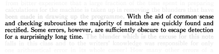
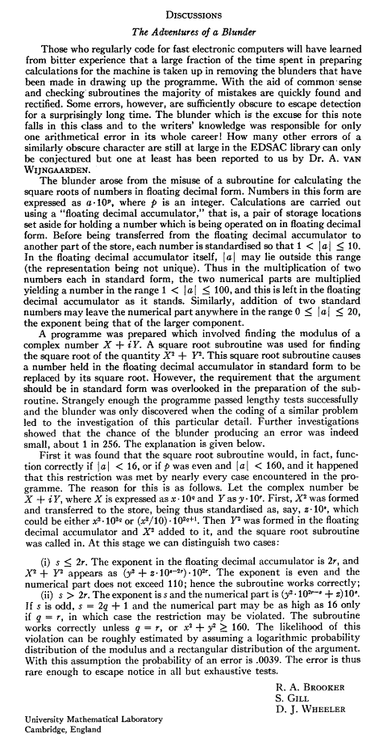

The Adventures of a Blunder
Nota: por brevedad y en general, cualquier afirmación en este blog
Los albores del desarrollo del software
¿Cuándo el hombre pasó de construir ingenios mecánicos a desarrollar software? La primera clasificación entra en el área de la ingeniería más clásica, apegada al mundo físico, mientras que la segunda representa el enorme salto cualitativo de controlar el mundo físico directamente usando el lenguaje abstracto de las matemáticas. La respuesta entonces se diluye entre aquellas máquinas construidas con suficiente complejidad como para no ser obvia qué configuración de la misma es necesaria para obtener el resultado esperado.
Sin duda errores atribuidos a la configuración (“programación”) y no a la máquina, se darían tan pronto o más que 1843, cuando Ada Lovelace “configuraba” la (no construida) Difference engine. Sería quizás posible remontarse a máquinas como el mecanismo de Anticitera para argüir que tales fallos de configuración existían ya hace miles de años.
Una posible forma de definir el surgimiento del desarrollo de sofware, y separarlo inequívocamente de “configuraciones de cierta máquina”, puede ser atribuirlo a la consciencia de los programadores de que hay “algo” sutil y profundo en el proceso de programar cierto algoritmo con independencia de la máquina física que lo ejecuta. Ese “algo” es, sencillamente, el ser consciente de la dificultad de escribir un código libre de errores, perfecto.
Con la arrogancia que da el haber aprendido de los errores y aciertos de los demás, ahora me parece casi ingenuo que precisamente fueran los matemáticos los que descubrieran con sorpresa tal dificultad, acostumbrados durante miles de años a no dar por cierto algo hasta que se hiciera obvio y evidente.
Así, si aceptamos tal definición, los albores del desarrollo de sofware quedarían fijados durante la década de 1940, aparición de las primeras máquinas electrónicas programables, a tenor de los comentarios de alguno de sus programadores:

Artículo completo

Referencias
- Wikipedia
- “Sketch of the analytical engine invented by Charles Babbage”, Scientific Memoirs, Sep. 1843
- “Software Reliability”, G.J. Myers, 0-471-62765-8, 1976
- “Mathematical Tables and Other Aids to Computation”, Vol. 6, No. 38, Apr. 1952